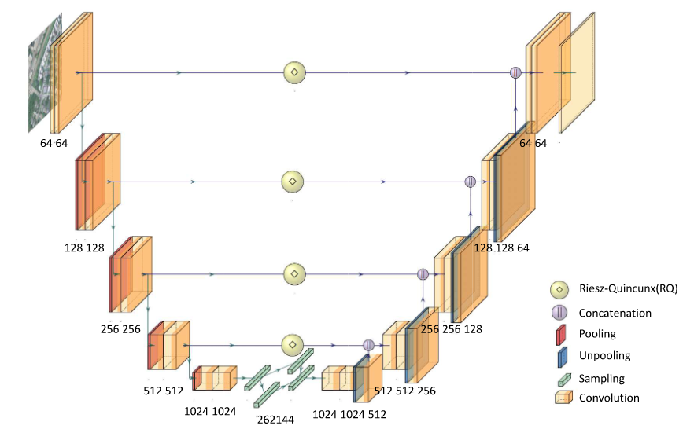

Projects
These are my research projects that focus on Computer Vision and Image Classification for Geospatial and Remote Sensing data.
Novel Riesz-Quincunx U-Net Variational Autoencoder for Satellite Image Denoising
Riesz-Quincunx-UNet Variational Auto-Encoder using Pytorch

Link to the published paper
Getting Started
The code is constructed using PyTorch and users can the requirement/environment.yaml to clone the conda environment. The code require at least Python 3.8.
The code is currently using a DataLoader from PyTorch to load data inside the model for training, therefore, need to modify the DataLoader code to correct data input path.
About
I'm a Ph.D. Candidate in Geography and Geospatial Science at George Mason University. My research focuses on using machine learning and deep learning models to perform image segmentation and image classification.
Contact
Contact Information: tri dot le83 at outlook dot com